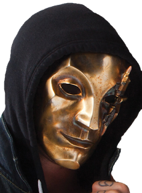
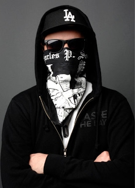
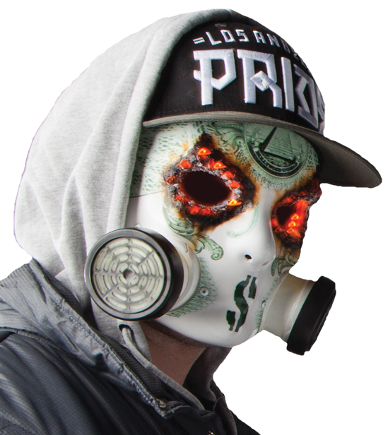
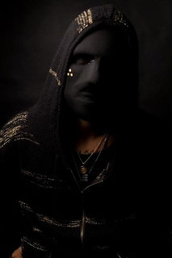
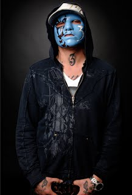
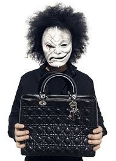

.jpg)
 Даниэль Роуз Мурильо (англ. Daniel Rose Murillo, Хесперия, США, 21 ноября 1982 года) — американский музыкант, участник рэпкор-группы Hollywood Undead. Бывший фронтмэн группы Lorene Drive. Женат, есть дочь Скарлетт. Имеет свою линию одежды Danny Rose Supply.
 Джордан Кристофер Террелл (англ. Jordon Kristopher Terrell, Лос-Анджелес, США, 3 сентября 1983 года), наиболее известный под своим сценическим псевдонимом Charlie Scene — участник рэпкор-группы Hollywood Undead и кавер-группы Han Cholo. Ранее был солистом гаражной рок-группы Upright Radio, которая записала два трека. В Hollywood Undead выступает с момента образования группы, исполняя свой отрывок в многих песнях и играя на гитаре. По его словам, Charlie Scene — это первое, что пришло в голову, когда участники группы выбирали псевдонимы.Женат на Randi Pentzer.
 Джорел Деккер (Лос-Анджелес, США, 1 мая 1984 года), наиболее известный под своим сценическим псевдонимом J-Dog — участник рэпкор-группы Hollywood Undead. В Hollywood Undead выступает с момента образования группы, исполняя свой отрывок во многих песнях и играя на гитаре и на фортепиано (примеры: Young; From the Ground). Псевдоним J-Dog (JD) расшифровывается как Jorel Decker. J-Dog обычно исполняет куплеты в серьёзных песнях
 Дилан Питер Альварес (англ. Dylan Peter Alvarez, 11 апреля 1986 года, Лос-Анджелес, США) наиболее известен под сценическим псевдонимом Funny Man — участник рэпкор-группыHollywood Undead. В Hollywood Undead выступает с момента основания группы. Участвует в записи, в основном, весёлых песен клубной направленности (часто вместе с Charlie Scene),Он умело разбавляет и разнообразит серьёзные темы группы и удачно контрастирует с другими вокалистами. Это необходимый ингредиент в коктейле под названием Hollywood Undead
 Дилан Питер Альварес (англ. Dylan Peter Alvarez, 11 апреля 1986 года, Лос-Анджелес, США) наиболее известен под сценическим псевдонимом Funny Man — участник рэпкор-группыHollywood Undead. В Hollywood Undead выступает с момента основания группы. Участвует в записи, в основном, весёлых песен клубной направленности (часто вместе с Charlie Scene),Он умело разбавляет и разнообразит серьёзные темы группы и удачно контрастирует с другими вокалистами. Это необходимый ингредиент в коктейле под названием Hollywood Undead
 Мэттью Бусек (англ. Matthew Busek, Лос-Анджелес, США, 1 апреля 1983 года), наиболее известный под сценическим псевдонимом Da Kurlzz (настоящая фамилия - Busek, St. Claire) - всего лишь один из псевдонимов — участник американской рэпкор-группы Hollywood Undead. С самого основания группы играет на ударной установке, на концертах — в паре с сессионными барабанщиками. Вокальные партии Da Kurlzz обычно не исполняет, участвует всего в пяти песнях: «Christmas in Hollywood», «The Natives»,«Scene for dummies»,«From The Ground» и «Been to Hell».Также он сыграл несколько эпизодических ролей в кино.